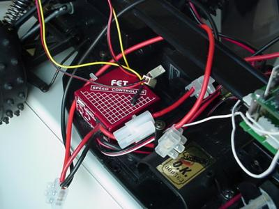
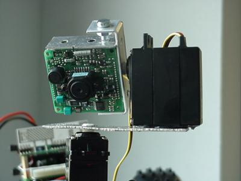
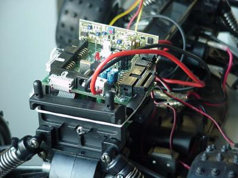
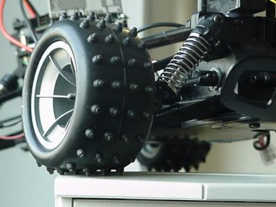
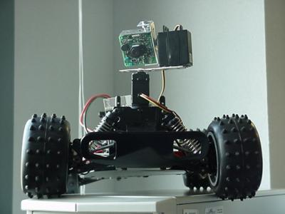
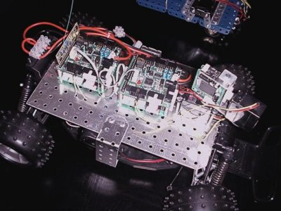
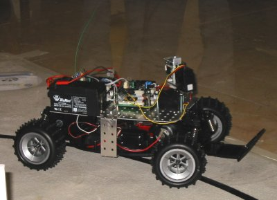

Bartolo era inicialmente un coche teledirigido que nos cedió el Grupo de Neurocomputación Biológica de la EPS.
MONTAJE Y CONTROL
Lo primero fue adaptarle la tarjeta de control GP_Bot.
Posteriormente, la idea era añadirle una pequeña mini-cámara montada
sobre una estructura de servos para poder moverla libremente. La
apariencia de Bartolo después de esta transformación es esta:
 Aspecto inicial de Bartolo
Aspecto inicial de Bartolo
Tras esta adaptación se procedió a desarrollar el software para poder controlar su desplazamiento. En este
aspecto sus características de coche teledirigido nos facilitaron bastante las cosas, ya que Bartolo presenta un
servo para el control de dirección y un controlador de velocidad mediante PWM. Esto simplifica el control al
empleo de un sistema de generación de señal PWM. La única complejidad por tanto es la programación de PWM
en la GP_Bot (tiene hardware específico para esta tarea) y establecer el rango de las señales PWM tanto de la
dirección como del controlador de velocidad.

Controlador de velocidad de Bartolo
Posteriormente, también fue programado el movimiento de la cámara, que igual que para el control,
consiste en programar los dos servos.

Mini-cámara montada sobre dos servos
RADIO CONTROL
Tras disponer del software de control de Bartolo, la siguiente fase era permitir su control desde un PC. El
sistema de desarrollo GP_Bot dispone de un conector para un módulo de radio
Aurel y en el CRM estábamos desarrollando un
software para comunicación radio, por lo que Bartolo fue el
primer robot en incorporar este sistema. Los resultados fueron muy buenos, y conseguimos disponer de un control
interesante del robot desde el PC.
POSTERIOR TRANSFORMACIÓN
Bartolo sufrió alguna que otra remodelación de su estructura para que
presentará una imagen un poco más acorde con su expectacularidad:
 Aspecto actual de Bartolo
Aspecto actual de Bartolo
Además, y en vista de que se iban a añadir más sensores, se hizo
necesaria una segunda GP_Bot esclava para disponer de la posibilidad de
manejar un mayor número de periféricos (sensores).
El resultado final es una apariencia espectacular que esconde un vehículo muy rápido bastante díficil de controlar.
EVENTOS
Bartolo se convirtió en el robot insignia del CRM. En todos aquellos eventos en los que hemos participado
no ha faltado, siendo siempre uno de los robots que más ha llamado la atención.
FOTOS

GP_Bot conectada a Bartolo

La impresionante rueda de Bartolo

Bartolo de frente (aspecto inicial)

Bartolo en la Presentación 2001
 Bartolo en la ChampionBot 2001
Bartolo en la ChampionBot 2001
 Bartolo de frente (aspecto final)
Bartolo de frente (aspecto final)

Bartolo visto de lado
 Bartolo en el SICFIMA VII
Bartolo en el SICFIMA VII
Documentos adicionales